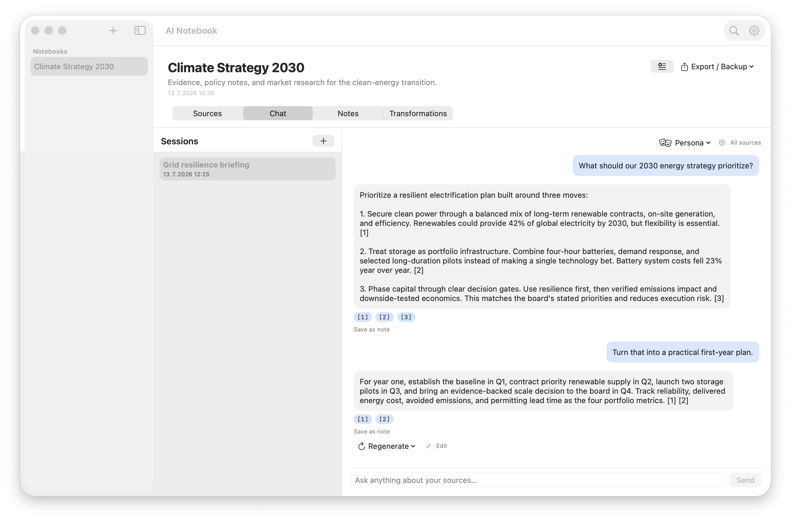
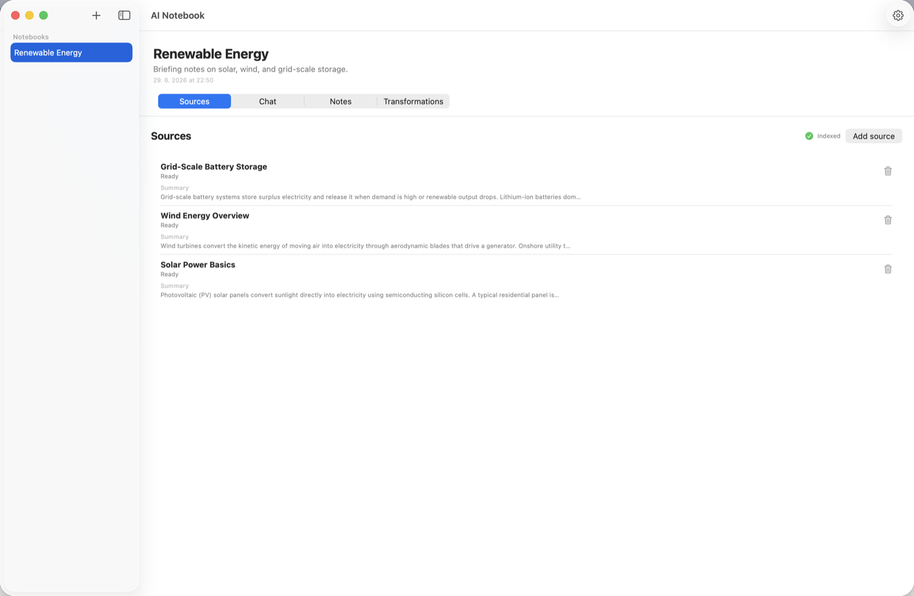
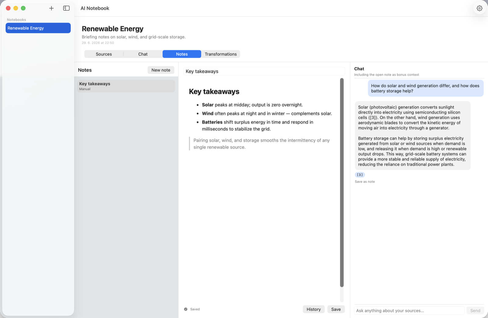
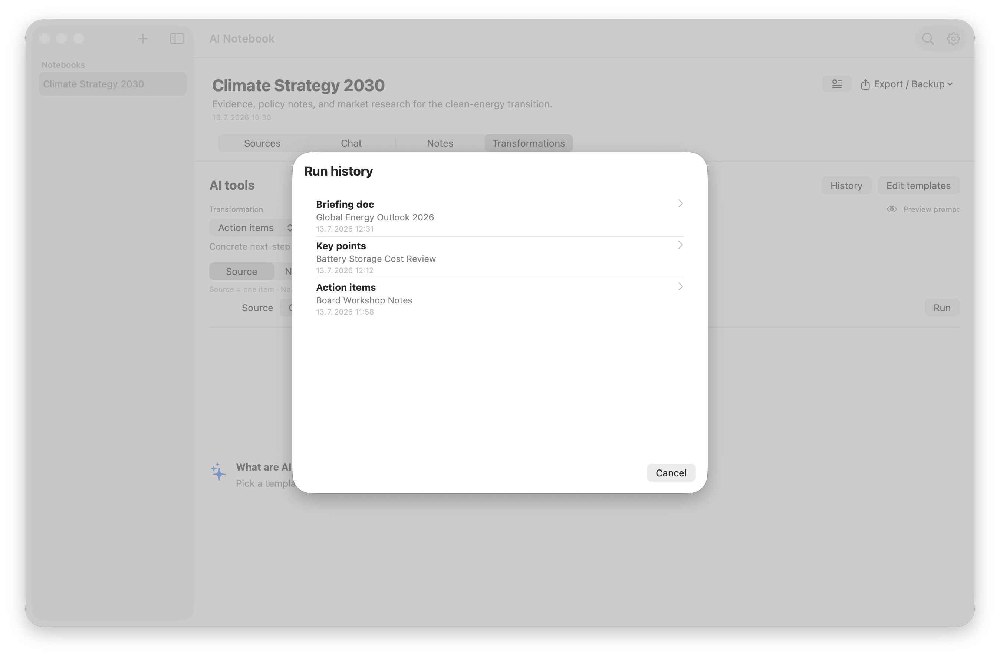

macOS 14+
Private AI for macOS and Windows
Every answer.
Rooted in your sources.
AI Notebook is a free, open-source NotebookLM alternative that reads your documents, cites its answers, and runs on your machine.

Your documents are not training data.
Your questions are not telemetry.
Your knowledge stays yours.
One private workspace
Four ways to move
an idea forward.
Switch between sources, conversation, writing, and reusable AI tools without leaving the notebook.



Local-first, for real
The cloud
is optional.
Use Ollama and every document, embedding, note, and conversation remains on your computer. Connect a cloud model only when you choose to.
- No account required
- Keys stored in the OS credential vault
- Open source under the MIT license
Built for the desktop
Native where
you do your work.
SwiftUI.
Download for macOS ↗
Windows 10/11
WinUI 3.
Made to belong.
Download for Windows ↗
Bring your own knowledge.
AI Notebook is free, open source, and ready for your next question.